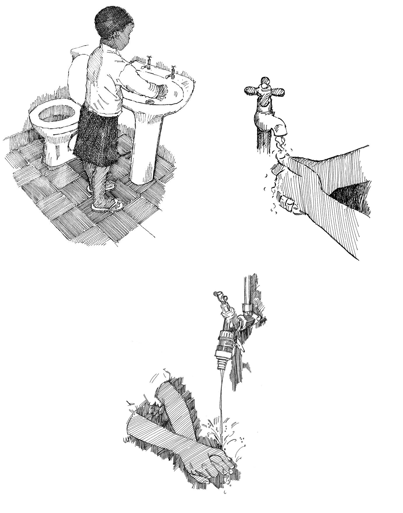

Overview
- Washing your hands is one of the most important ways to prevent the spread of many epidemics, especially diarrhoeal diseases .
- Handwashing is easy and everyone (including children) can do it.
- To be able to wash their hands, people need running water, liquid soap or ash, and paper towels.
When to wash hands
Wash your hands BEFORE:
- Preparing or eating food.
- Treating a wound (yours or someone else’s).
- Caring for someone who is ill.
- Breastfeeding.
Wash your hands AFTER:
- Using the toilet.
- Washing or changing a baby or infant.
- Coughing or sneezing.
- Caring for someone who is ill.
- Coming into contact with a sick person in an epidemic (see Action tool 35 ).
- Handling raw meat.
- Contact with animals (including pets).
- Handling rubbish or anything that might be contaminated.
How to wash hands
- Wet your hands and rub them with soap or ash.
- Rub all parts of your hands together for 10 to 15 seconds.
- Use lots of force (push your hands together hard) and remember to wash all surfaces, including the backs of the hands and between the fingers.
- Rinse hands well so they are free of soap or ash.
- Dry hands with a paper towel. If there is no towel, wave them in the air until they are dry.

1. Wet your hands and use soap or ash. 2. Wash for 10 to 15 seconds. 3. Rinse hands well.